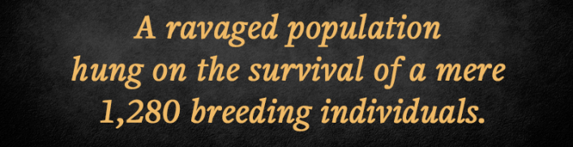
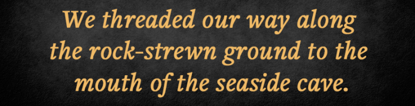
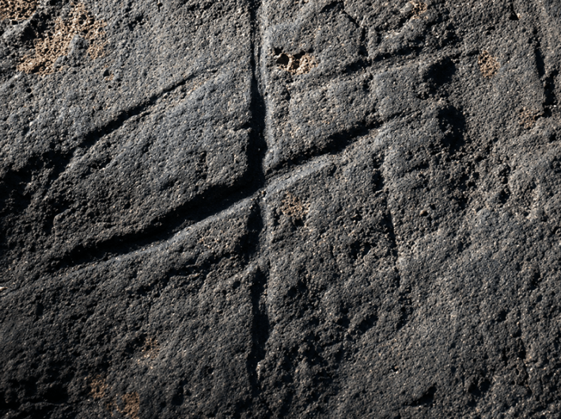
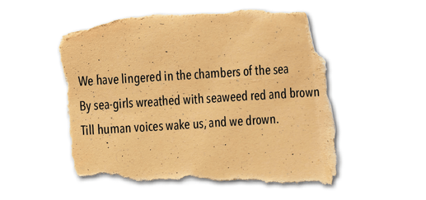

Gorham’s Cave forms a magnificent arch on the eastern side of the Rock of Gibraltar, at the southern tip of the Iberian Peninsula. Backed by a sheer rock face that looms higher than the Eiffel Tower, the cave, and three adjoining ones, were home to Neanderthals and early humans for a span of 120,000 years. The caves were among the last refuge for Neanderthals before they went extinct some 25,000 years ago.
I am a neurogeneticist, keen to learn about the origins of the human brain, and several years ago visited Gorham’s Cave as the guest of paleoanthropologist Clive Finelayson, director of the Gibraltar National Museum.
On a sunny, windy afternoon, waves crashing on the shore of the Alboran Sea, Finelayson and I threaded our way along the rock-strewn ground to the mouth of the seaside cave. We maneuvered around the neatly partitioned dig sites toward the back wall, where we sat on a couple of wobbly stools.

In the dim light, Finelayson told me about the last days of the Neanderthals in Gorham’s Cave. A severely cold and arid climate had taken hold of the area 25,000 years ago, and the dwindling Neanderthals, which lived in small groups, likely didn’t survive the drought. Meanwhile, Homo sapiens, whose diet was more diverse, and occupied more territory on the Iberian Peninsula, flourished, ultimately claiming the caves as their own. Archaeological evidence hints that Phoenicians and Carthaginians, who occupied the area between the ninth and third centuries B.C., used the caves as areas of worship.
As Finelayson and I talked, I looked outward from the cave at sky and sea framed by the stone arch, toward the Rif mountain range of North Africa visible on the horizon. Feeling wistful, I began to ponder the last days of the Neanderthals and the precarious survival of Homo sapiens, our species. It’s a far lesser-known story than the demise of the Neanderthals. But there was a time in Africa when our direct ancestors teetered on the brink of extinction. At this critical moment, a small cluster of unknown hominins heralded the future of modern humans with big brains and minds.
This drama unfolded about 900,000 years ago. The first rumblings of an ice age, more severe than any glaciation over the previous hundreds of millions of years, bore down on the planet. Called the Mid-Pleistocene Transition, it was a new type of ice age that occurs in 100,000-year cycles rather than the previous history of more mild ice ages every 40,000 years. While massive ice sheets spread through the high northern latitudes in Africa, megadroughts punctuated by periods with moisture caused the forests to recede and the savannahs to expand.
Our human ancestors didn’t fare well. As many as 99 percent of them were wiped out. With so few individuals, their small sparse groups left only silence in the fossil record. These unidentified archaic humans were an endangered species that clung to existence for over 100,000 years while evolutionary changes churned in their genes.
TO THE CAVE:Neanderthals and early Homo sapiens entered this opening in Gorham’s Cave Complex on the Rock of Gibraltar for shelter and home. Credit: Visit Gibraltar / Flickr.
The focus on this perilous time was sharpened by scientists at the Chinese Academy of Sciences in Shanghai.1 In 2023, they used contemporary genomes to reconstruct human history and concluded that the future emergence of Homo sapiens from an environmentally ravaged population hung on the survival of a mere 1,280 breeding individuals. For 117,000 years, a group the size of a tiny village eked out a bare-boned existence.
In the absence of a fossil record, we can only surmise their existence by interpreting modern genomes and computing the number of generations and individuals that could give rise to the global distribution of DNA variants today. In each generation, mutations occur at known rates, like a clock, from which we can picture a few details of this ancestral population. Doing the math, it appears that a massive population loss was coincident with the Mid-Pleistocene Transition.
It was not the only time that the numbers of ancestral humans dwindled. Since we diverged from the apes 7 million years ago, all the ancient humans on our branch of the tree of life have been replaced. But on this occasion, the human ancestral line, on the verge of extinction, hung on.
How? We made it through a bottleneck, a population collapse followed by recovery. Successfully squeezing through a bottleneck requires enough individuals to avoid high levels of inbreeding. Inbreeding jeopardizes population survival by eliminating genetic diversity and making a species vulnerable to environmental threats that pick off individuals and their progeny. About 500 to 5,000 individuals is the minimal viable population size needed for survival, placing our ancestors in the zone of extreme jeopardy when a few chance circumstances determined whether Homo sapiens would one day exist. The genes of those who survived the bottleneck became evolution’s easel leading to Homo sapiens.
Read more: “How Neanderthals Kept Our Ancestors Warm”
Those intrepid few who faced the most severe bottleneck of human history originated about a million years earlier, when the taxonomic genus Homo first diverged from earlier archaic humans. During that time, they nearly doubled their brain size from the 600 cc (cubic centimeters) of the presumptive first Homo, known as Homo habilis, to the roughly 1,000 cc brain of Homo erectus. A larger brain suggests more brain cells, and more brain cells likely benefited hominins with greater adaptive versatility to environmental challenges. Along with a more spacious brain cavity, Homo erectus walked a lot like us, and walked right out of Africa to vast regions of Asia. In the extreme environments of this epoch, Homo erectus was the first hominin to transcend environmental boundaries on a global scale.
Those that remained in Africa spent about 5,000 generations leaving barely a trace of their dwindling numbers. But against all odds, the fossil history comes alive again 600,000 years ago with a new member of the Homo lineage—Homo heidelbergensis. Fossil remains from this new species were discovered at sites in both Europe and Africa, including Zambia, Ethiopia, Tanzania, and South Africa. Remarkably, Homo heidelbergensis was gifted with another 500 cc of brain.
What happened in those missing 300,000 years, from 900,000 years ago to 600,000 years ago, is one of the unfathomable mysteries of human evolution. While the gene pool presumably shrank due to the declining population during the bottleneck, the engine of evolution increased the brain size 25 to 30 percent from Homo erectus to Homo heidelbergensis. One explanation for both the survival of this small population and the emergence of a creature with a large brain can occur through a genetic “shortcut.”

A large population may suppress genetic change because a less fit individual cannot survive among so many better adapted competing peers. However, in a small population, a mutation—even one that reduces fitness—is under less competition and might persist in the population until further mutations come along and add biological innovations that combine to enhance fitness.
Counterintuitively, the small population might benefit from inbreeding that will filter out the most lethal recessive genes and leave fewer deleterious genes. When a favorable mutation occurs in a founder, one who has many progeny over generations, evolution can accelerate in a small group and become fixed in just a few generations. Demarcating small groups, or “isolation by fragmentation,” occurs as isolated patches of habitat destruction limit gene flow and erode genetic diversity. Unlike gradual separation, fragmentation causes rapid, severe, genetic divergences that drive adaptive changes in traits, but also increase the extinction risk. The climate conditions of southern Africa at the time fit this scenario.
As Homo lineages recovered in Africa, with Homo heidelbergensis among them, the adventurous ones left the continent 700,000 to 400,000 years ago, just as their Homo erectus ancestors had done about a million years earlier. Their destination was Europe where their descendants became Neanderthals and Denisovans, first identified in Siberian caves.
Read more: “In Search of the First Human Home”
Early Neanderthal and Denisovan wanderers lived in small groups with a small circle of mating partners. The genes they brought with them from the time of the bottleneck added another 500 cc of brain tissue and probably helped them learn to adapt to cold climates, to migrate across Eurasia, find a diverse diet, and invent rope, possibly for clothes. Neanderthals survived for about 360,000 years and Denisovans, who populated a vast territory from Altai Mountains in Siberia to the high-altitude Tibetan Plateau and down to the tropical forests and islands of Southeast Asia may have had a comparable survival.
In the end, though, numerous possible threats to their survival, including the low genetic diversity of both species associated with small-group living conditions decreased their fertility and increased their mutational load and decreased their adaptation to environmental change. Nevertheless, they had a good run.
At least 100,000 years after some Homo heidelbergensis groups left Africa, a new species appeared about 300,000 ago in many parts of Africa. These were Homo sapiens, whose oldest fossil was found in Jebel Irhoud, Morocco. Homo sapiens with the same bonus genes from the bottleneck no longer lacked partners. With the passage of another 100,000 to 200,000 years, progeny from those few who had lived on the edge of a precarious existence began to spread through many regions of Africa, perhaps originating from the fragmentation patches. They formed a family of relationships that more resembled “a tangled vine” through which genes flowed among disparate peoples rather than a single evolutionary tree trunk.
Unlike the Homo lineages that already left Africa with a low diversity gene pool, the remaining ancestral Homo sapiens were the beneficiaries of a larger gene pool due to human expansion across Africa from forests to arid deserts.2 The additional time that Homo sapiens ancestors spent in Africa compared to Neanderthals and Denisovans was a great boon that contributed to the distinctiveness of contemporary Homo sapiens. That is us.

COGNITIVE LEAP:These first known engravings by Neanderthals inside Gorham’s Cave Complex indicate they were capable of abstract thought. Credit: AquilaGib / Wikimedia Commons.
During the many years since the severe bottleneck, we must assume that the genes that survived through a time of near extinction constituted the genetic canvas upon which cognitive innovation arose and created large social organizations around abstract notions such as countries and religions as well as a vast library of symbols that represent these institutions. Homo sapiens too wandered off to Europe, 60,000 to 70,000 years ago, where they mated with the Neanderthals. But the gene flow from these new arrivals that might have enhanced their fitness was too late to prevent Neanderthal extinction. Only a brief few thousand years passed when Homo sapiens and Neanderthals overlapped and interbred. It happened in the interval when Neanderthals lived in Gorham’s Cave.
As much as we would like to tell the entire story of those genes passed down through ancestral Homo species that led to our complex brains today, we simply don’t have the full picture. We know the answer is not a magic gene that suddenly appeared. The answer—still obscure—lies somewhere in the highly intertwined networks of pre-existing genes, many with small evolutionary changes that tweaked their functions.
And there have been tantalizing examples. One is the NOVA1 gene, which has a Homo sapiens variant absent in Neanderthals, Denisovans, and all other animals. As a master regulator of gene expression, the variant affects how numerous other genes are expressed, particularly those related to synapses and neural connectivity.
When a single mutation corresponding to the Neanderthal variant was introduced into a human brain organoid, the development of the organoid and its firing pattern was altered, but how or even whether that pattern might relate to the large-scale behavioral differences between these species is unclear. When the human variant was introduced into the mouse, it altered its vocalization.
Read more: “Lucy at 50”
Quite provocatively, the variant might serve to develop the brain circuitry of language, a key facet of Homo sapiens evolution.3 While this variant is rare in Homo sapiens, a small number of individuals carry the Neanderthal version, again pointing to the fact that no single gene can account for the transition to Homo sapiens.
From my point of view, our survival through a bottleneck and the accompanying genetic story fits the punctuated equilibrium hypothesis proposed by paleontologists Niles Eldredge and Stephen Jay Gould in 1972. This view of evolution posits long periods of stasis during which the gene engine that generates constant small numbers of mutations rumbles along without much obvious impact on overall anatomy and physiology until the collective changes mount and in a brief, rapid burst, novelty appears.
Eldredge and Gould suggested that demarcated speciation—not gradual change—was the dominant mode of evolution in the human lineage represented by our numerous diverse ancestors, each accompanied by large genetic changes. From stirring the genetic mix of DNA variants among the survivors of the near extinction event 900,000 years ago, came a leap in brain size and then further mixing as the first Homo sapiens emerged from interbreeding among regionally isolated populations across the African continent. While the details of our evolution remain elusive, Homo sapiens ultimately emerged, even though we might not be the only possible destiny of our lineage if we “replayed the tape of life,” Gould famously said.
A leap in brain size can be measured. A leap in cognition can only be inferred. Reflections of the natural world that fill the brain with the kind of abstractions and symbolic images that guide us today are nearly—but not entirely—invisible. Gorham’s Cave itself is proof that early hominins possessed symbolic thought. Neanderthals engraved crisscrossing lines, rather like a tic-tac-toe grid, into the bedrock.4 Finelayson explained the engravings represent a form of symbolic communication, revealing the Neanderthals were capable of abstract thought, contrary to what had long been thought about them.
As twilight approached and Finelayson and I got up to leave the cave, I paused in reflection about our imaginary friends the Neanderthals. They spent the twilight of their precarious existence here, deeply embedded in the rhythms of the natural world, uncertain of their fate. I looked out at the sea, and a few lines from T.S. Eliot’s “The Love Song of J. Alfred Prufrock” came to mind.

References
-
Hu, W., et al. Genomic inference of a severe human bottleneck during the Early to Middle Pleistocene transition. Science 381, 979-984 (2023).
-
Hallett, E.Y., et al. Major expansion in the human niche preceded out of Africa disposal. Nature 644, 115-121 (2025).
-
Tajima, Y., et al. A humanized NOVA1 splicing factor alters mouse vocal communications. Nature Communications 16, 1542 (2025).
-
Rodríguez-Vidal, J., et al. A rock engraving made by Neanderthals in Gibraltar. Proceedings of the National Academy of Sciences 111, 13301-13306 (2014).
Lead image: Onin / Adobe Stock